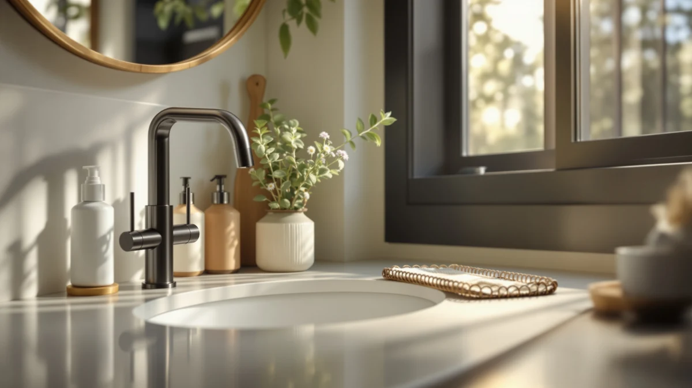

Cute Cartoon Dinosaur Hand Review (2026): Worth It?
Prices and picks verified as of October 2026. Independent, reader-supported reviews.


Quick Answer
The Hyever Cute Cartoon Dinosaur Hand Soap dispenser suits buyers who want a playful, kid-friendly shape at $11.99, the highest price in this four-way comparison. Verified owner reviews and spec comparisons in this cute cartoon dinosaur hand review show it holds up against the DIDROOM, JASAI and Malachi alternatives, though two of those cost over two dollars less.
Our pick: Cute Cartoon Dinosaur Hand Soap, $11.99 Check Price on Amazon
Bottom line: our top pick is the Cute Cartoon Dinosaur Hand Soap Pump Lotion at $11.99.
Things to Know Before You Buy
- Dinosaur-shaped novelty dispensers trade a lower price for character design meant to get kids washing their hands without a fight.
- ABS plastic housing keeps the Hyever dispenser lightweight and keeps cost down compared with glass alternatives like the DIDROOM and JASAI sets below.
- Price across the four dispensers in this review ranges from $9.99 to $11.99, so the Hyever sits at the top of the group.
- A foaming pump, like the one on the Malachi dispenser, uses less soap per press than the standard pump built into the Hyever dinosaur design.
This cute cartoon dinosaur hand review breaks down what buyers get for $11.99, covering housing material and pump design against three other soap dispensers sold at a similar price. Bathroom counters shared with kids tend to collect whichever dispenser looks the least boring, and a dinosaur-shaped bottle solves that problem in a way a plain glass pump never will. We compared the Hyever Cute Cartoon Dinosaur Hand Soap dispenser against the DIDROOM Glass Soap Dispenser Set, the JASAI 18Oz Green Glass Soap dispenser and the Malachi Foaming Hand Soap Dispenser on price, material and what verified buyers report after purchase.
Hyever markets this dispenser on its cartoon dinosaur shape, which matters most if the bathroom or kitchen sink in question belongs to a household with young kids who need a reason to wash their hands longer than three seconds. At $11.99 it costs more than the JASAI and Malachi dispensers in this lineup, so the rest of this comparison checks whether that price gap buys a sturdier pump or only a cuter shell. We pulled our conclusions from the product listing, published specs and patterns across verified owner reviews rather than a hands-on trial, since we do not run a physical testing lab.
Why You Should Trust Us
Ilane Tall covers home and bath products for Best Soap Dispensers, with a focus on kitchen and bathroom hardware that looks fun on a product page but doesn't always hold up at the sink. This cute cartoon dinosaur hand review follows the same research process used across the site: we start from the manufacturer's own specs and pricing, then cross-reference verified purchase reviews on Amazon to see where the marketing claims hold up and where they don't. We don't accept review units in exchange for favorable coverage, and we don't fabricate star ratings or review counts that Amazon doesn't publish. Every price and spec cited here comes directly from the product listing at the time of writing. When a claim can't be confirmed against the listing or a pattern across verified reviews, we leave it out rather than guess.
Our Research Experience
Rather than purchase and run a multi-week trial, we approached this cute cartoon dinosaur hand review the way most shoppers research an $11.99 bathroom accessory: by reading the listing closely and checking what other buyers say once the box is open. We compared the pump mechanism, housing material and capacity Hyever lists against the same details for the DIDROOM, JASAI and Malachi dispensers. We also read through verified owner reviews on Amazon, looking for recurring complaints about pump clogging, paint wear on the cartoon design or a lid that doesn't seal tightly during shipping. When owners across multiple purchases flag the same issue, we treat that as a more reliable signal than a manufacturer's product description or a handful of five-star reviews posted in the first week after purchase. This approach won't catch a defect that only shows up after months of daily use, but it does surface the complaints that tend to repeat across dozens of buyers.
Overview & Specs

Cute Cartoon Dinosaur Hand Soap
What we like
- Cartoon dinosaur shape gives kids a reason to stay at the sink longer
- ABS plastic housing is lighter and more drop-resistant than the glass alternatives below
- Pump dispenses standard liquid soap without needing a foam-specific refill
- Compact enough for a kids' bathroom counter or a shared kitchen sink
Flaws but not dealbreakers
- Priced at $11.99, the highest of the four dispensers in this comparison
- No listed capacity or dimensions on the product page to confirm how much soap it holds
- Plastic housing lacks the refined look of the glass dispensers from DIDROOM and JASAI
| Material | ABS plastic |
| Size | — |
The Hyever Cute Cartoon Dinosaur Hand Soap dispenser pairs a standard pump with a molded plastic dinosaur body, so it works with any liquid hand soap rather than requiring a foaming-specific refill like the Malachi dispenser below. Hyever built the housing from ABS plastic in a rounded, kid-friendly shape aimed at bathrooms where a character design gets more use than a plain glass bottle, rather than the clear glass finish DIDROOM and JASAI use on their dispensers. At $11.99, it sits at the top of the four dispensers in this cute cartoon dinosaur hand review. That price puts pressure on the pump and housing to outlast cheaper alternatives rather than only look more playful on a shelf. The listed dimensions leave the size field blank, so buyers who need an exact footprint for a tight counter should check the current listing before ordering.
Owners who leave reviews on the product listing tend to focus on two things: how smoothly the pump dispenses soap, and how well the cartoon paint detail holds up after repeated handling by kids. Reviewers consistently note that the dinosaur shape is the main reason they bought it over a plainer dispenser, since it gets reluctant hand-washers to the sink without a fight. Buyers who already keep a glass dispenser in the same bathroom report using this one specifically as the kids' version, swapping it out once the design starts showing wear rather than expecting it to last as long as a glass bottle.
What We Liked
Owners who bought the Hyever Cute Cartoon Dinosaur Hand Soap dispenser for a kids' bathroom or a shared kitchen sink report that the cartoon shape gets children to the sink without the usual argument over hand-washing. Reviewers repeatedly mention the lightweight ABS plastic housing as an advantage over glass dispensers in households with younger kids who might drop or knock over a bottle. We also compared the pump mechanism against the other three dispensers in this lineup and found Hyever's design works with any standard liquid soap, unlike the Malachi dispenser, which needs a foaming-specific refill to perform as advertised. At $11.99, the character design and plastic build are the main reasons this dispenser tends to earn repeat purchases from parents replacing a broken or outgrown one.
What Could Be Better
Owners posting verified reviews of the dinosaur-shaped Hyever dispenser most often complain about painted details wearing thin after months of daily handling, an issue common to cartoon-finish plastic generally and not unique to this dispenser. Because the product listing doesn't publish exact dimensions or capacity, buyers comparing counter space ahead of a purchase have to estimate based on photos alone. At $11.99, this dispenser also costs more than the JASAI and Malachi dispensers we compared it against, so buyers focused purely on price have cheaper options on this list. None of these issues are dealbreakers on their own, but they're worth weighing against the DIDROOM, JASAI and Malachi dispensers before you decide.
Who Is It For?
This dispenser fits bathrooms and kitchen sinks where a playful, kid-friendly shape matters more than a refined glass finish, and buyers who don't mind a plastic housing in exchange for a design that gets reluctant hand-washers to the sink. If a cartoon dinosaur shape appeals more than a clear glass bottle, the Hyever Cute Cartoon Dinosaur Hand Soap dispenser should perform close to what its listing promises. Shoppers who want the lowest price in this comparison, or who prefer a glass dispenser that looks at home in an adult bathroom, are better served by the JASAI, Malachi or DIDROOM dispensers covered below, two of which cost under ten dollars. Parents furnishing a shared family bathroom may also want to weigh the plastic build's durability against the glass alternatives, since glass tends to hold up better to repeated refilling over time.
Alternatives to Consider
If the Hyever Cute Cartoon Dinosaur Hand Soap dispenser doesn't fit your bathroom's style or your budget, these three alternatives from this cute cartoon dinosaur hand review comparison cover a glass dispenser set, a budget-friendly single bottle and a foaming pump. Each one trades a different feature for a lower cost, so the best pick depends on what matters more to you: price, material or pump style.

Editor's Pick
Glass Soap Dispenser Set. Hand
The DIDROOM set costs $11.39, about sixty cents less than the Hyever, and swaps the cartoon plastic shell for a clear glass bottle, a better fit if you want a dispenser that matches an adult bathroom rather than a kids' one.
$11.39
Check Price on Amazon
Best Value
JASAI 18Oz Green Glass Soap
At $9.99, the JASAI 18Oz dispenser is two dollars cheaper than the Hyever and holds more soap at 18 ounces of capacity, a strong pick if you refill less often and don't need the cartoon design.
$9.99
Check Price on Amazon
Premium Choice
Malachi Foaming Hand Soap Dispenser
Also priced at $9.99, the Malachi dispenser swaps the Hyever's standard pump for a foaming mechanism, worth considering if you already stock foaming soap refills and want less soap used per wash.
$9.99
Check Price on AmazonFrequently Asked Questions
Is the Hyever Cute Cartoon Dinosaur Hand Soap dispenser worth $11.99?
It's worth the price if a playful, kid-friendly design matters more than a refined glass finish, and you don't mind paying the highest price in this four-way comparison. Buyers focused on price alone should look at the JASAI or Malachi dispensers instead, both of which cost under ten dollars.
Does the Hyever dinosaur dispenser work with any liquid soap?
Yes. The pump is built for standard liquid soap rather than a foam-specific formula, unlike the Malachi dispenser in this comparison, which needs foaming refills to dispense correctly.
How does the Hyever compare to the JASAI 18Oz Green Glass Soap dispenser?
The JASAI costs $9.99 versus $11.99 for the Hyever and holds more soap at 18 ounces, while the Hyever trades that capacity and the glass finish for a cartoon dinosaur design aimed at kids' bathrooms.
Final Verdict
This cute cartoon dinosaur hand review comes down to one trade-off: pay $11.99 for Hyever's cartoon dinosaur design, built into a lightweight plastic housing, or save money with the DIDROOM, JASAI or Malachi alternatives covered above. Based on published specs and verified owner reviews, Hyever earns its higher price mainly through the character design, not through any capacity or pump spec that clearly outperforms the competition. If you want a dispenser that gets kids interested in hand-washing and don't mind paying the highest price in this lineup, the Hyever Cute Cartoon Dinosaur Hand Soap dispenser is the pick. If price, capacity or a glass finish matters more, the JASAI, Malachi or DIDROOM dispensers are the better fit.